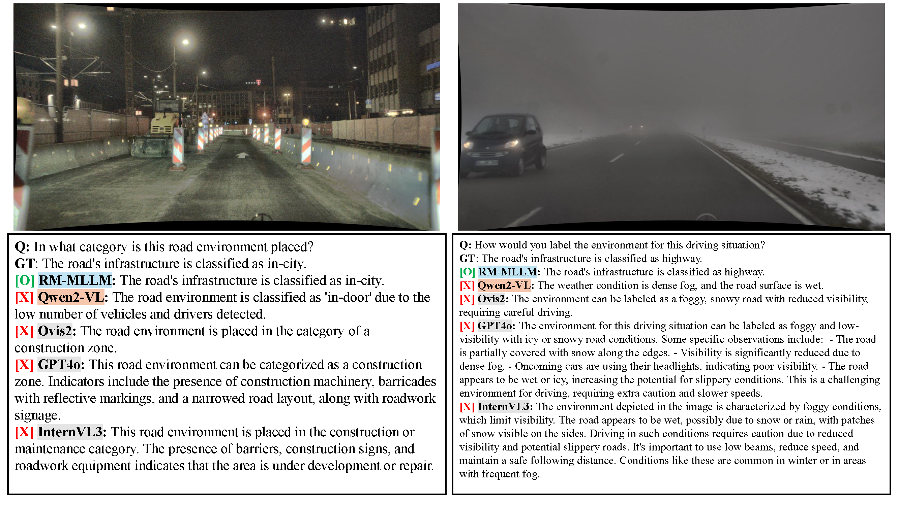

DENSE-QA: An example of the DENSE-QA dataset for scene understanding in adverse driving conditions. (a) RGB and multispectral images are used as input, and (b) a total of six scene understanding tasks are structured in an instruction-response format.
RM-MLLM: An overview of the proposed RM-MLLM architecture. The model is trained using a progressive strategy consisting of three stages: pre-training, fusion, and instruction tuning. Synchronized RGB and multispectral images are passed through separate vision modules to be converted into visual tokens, which are then fused in N Fusion Modules using Multi-Head Cross Attention and MoE-FFN. The resulting fused tokens are passed through a Projector module and fed into a Large Language Model (LLM) fine-tuned with LoRA to generate a reasoning response.
Multimodal large language models (MLLMs) for autonomous driving often become less reliable in adverse weather, partly because training data are dominated by clear, well-lit scenes, and most models primarily rely on RGB imagery. We address these issues with two contributions. First, we introduce DENSE-QA, a large-scale benchmark for adverse-weather scene understanding comprising 12,997 scenes and over 77,000 instruction-response pairs, built on synchronized RGB and multispectral imagery. Second, we propose RM-MLLM, an MLLM architecture with modality-specific encoders and an adaptive fusion module, trained with a three-stage progressive strategy to better integrate complementary sensor cues. Across multiple LLM backbones, RM-MLLM improves QA performance under adverse conditions. Using only RGB input, the proposed architecture and training already outperform all evaluated baselines, including prompt-augmented models, by over 11 percentage points. Incorporating RGB-multispectral fusion provides an additional 3-point gain concentrated on weather-sensitive tasks. We also observe that fine-tuning a strong RGB-only vision-language model on the same training data yields performance comparable to its zero-shot evaluation, suggesting that DENSE-QA fine-tuning alone does not close the gap to RM-MLLM and that multispectral input provides complementary value.
Percentage distributions for the five attribute groups used in our scene-understanding tasks: Time-of-Day (TOD), Road-Surface Condi- tion (RSC), Weather (WEA), Infrastructure (INF), and Illumination (ILL). The vertical and horizontal axes represent various tasks and class ratios, respectively.
Numerical distribution of labels for each task in the DENSE-QA dataset.
Quantitative comparison with state-of-the-art models on the DENSE-QA benchmark.
We evaluate RM-MLLM against general-purpose VLMs, driving-specific MLLMs, a fine-tuned baseline (Qwen2-VL
trained on the same DENSE-QA data), and an RGB-only ablation across six scene understanding tasks. An asterisk
(*)
denotes results from prompts augmented with a class list. All models are evaluated using identical
category-based keyword matching. Average is computed over the six per-task accuracies
(OBJ Total, TOD, RSC, WEA, INF, ILL).
Qualitative comparison on challenging DENSE-QA examples.
Two scenarios each for (a) RSC and (b) Weather. Colors: blue
=RM-MLLM (ours), orange =fine-tuned (Qwen2-VL), gray =zero-shot VLMs.
RGB-only models are misled by ambiguous visual cues, while RM-MLLM correctly interprets the scenes using
multispectral information.
(c) Time-of-Day (TOD) and (d) Illumination (ILL)
(e) Infrastructure (INF)